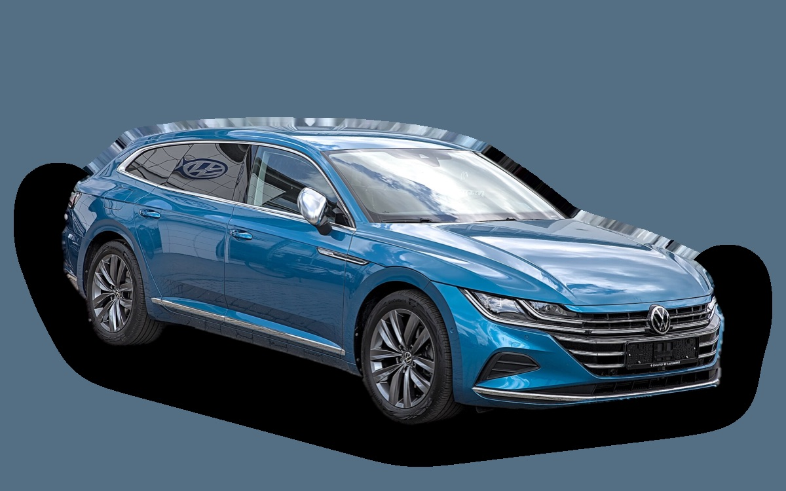

Vad kostar en Volkswagen Arteon per månad?
En Volkswagen Arteon från 2021 kostar cirka 3 712 kr i månaden, allt inräknat.
3 712 krper månad, årsmodell 2021
243 000 krpris, årsmodell 2021
516 900 krsenaste nypris
Aprisvärdhetsbetyg (2021)


Månadskostnad per årsmodell
| Årsmodell | Version i beräkningen | Pris | Per månad | Betyg |
|---|---|---|---|---|
| 2024 | TDI 200 DSG 4MOTION, Fastback, R-Line | 324 000 kr | 4 758 kr | B |
| 2021 | TSI 150 DSG, Fastback, R-Line | 243 000 kr | 3 712 kr | A |
| 2018 | TSI 150 DSG, Fastback, R-Line | 202 000 kr | 3 681 kr | A |
Räknat på 5 års ägande och 1 250 mil per år, med bränslepriser från 2026-10-22. Månadskostnaden innehåller värdeminskning, drivmedel, service och reparationer, försäkring och fordonsskatt.
Så fördelas kostnaden för en 2021:a
- Värdeminskning: 959 kr/mån
- Drivmedel: 1 358 kr/mån
- Service och reparationer: 759 kr/mån
- Försäkring: 542 kr/mån
- Fordonsskatt: 94 kr/mån
Begagnatpriser i annonser
| Årsmodell | Medianpris | Annonser | Typiskt miltal |
|---|---|---|---|
| 2023 | 289 900 kr | 5 | 9 300 mil |
| 2022 | 269 900 kr | 13 | 9 900 mil |
| 2021 | 269 000 kr | 20 | 10 400 mil |
| 2020 | 262 400 kr | 8 | 11 600 mil |
| 2019 | 229 900 kr | 6 | 13 900 mil |
| 2018 | 239 800 kr | 16 | 14 400 mil |
Medianpriset i svenska annonser per årsmodell i oktober 2026 (källa: Blocket, AutoUncle). Annonspriser är utgångspriser, och slutpriset kan bli lägre.
Motorer och versioner
| Motor | Drivmedel | Effekt | 0–100 km/h | Förbrukning (WLTP) | Räckvidd | Årsmodeller | Pristillägg |
|---|---|---|---|---|---|---|---|
| TSI 150 DSG | Bensin | 150 hk | 8,9 s | 6,3 l/100 km | – | 2018–2023 | – |
| TDI 200 DSG 4MOTION | Diesel | 200 hk | 7,1 s | 5,9 l/100 km | – | 2018–2024 | +70 000 kr |
| eHybrid 218 | Laddhybrid | 218 hk | 7,8 s | 1,4 l/100 km + 16 kWh/100 km | – | 2021–2024 | +121 000 kr |
| R TSI 320 4MOTION | Bensin | 320 hk | 4,9 s | 8,6 l/100 km | – | 2021–2024 | +183 000 kr |
- Kaross: Fastback, Shooting Brake (+10 000 kr)
- Utrustning: R-Line
Fakta
- Kaross
- Sedan
- Årsmodeller
- 2018–2024
- Senaste nypris
- 516 900 kr
- Bagage
- 563 liter
- Euro NCAP
- 5 av 5 stjärnor
- Nybilsgaranti
- 3 år
- Driftsäkerhet
- 4 av 5
- Helförsäkring, uppskattning
- 8 200 kr/år
- Service, uppskattning
- 4 800 kr/år
Vanliga fel att ha koll på
- DSG-låda DQ200 (mekatronik, koppling), reparation cirka 20 000 kr
- Vattenpump och termostathus i plast läcker, reparation cirka 6 500 kr
- EGR och partikelfilter (TDI), reparation cirka 9 000 kr
- Haldex-pump (fyrhjulsdrift), reparation cirka 7 000 kr
- DSG-låda (mekatronik), reparation cirka 18 000 kr
Felen gäller vissa motorer och årsmodeller. I kalkylatorn räknas risken för just den version du väljer.
Fördelar och nackdelar
Fördel
Snygg och rymlig med stort bagage, billig begagnad jämfört med premiummärkena.
Nackdel
Tillverkas inte längre och DSG-lådan kan bli dyr.
Liknande bilar
 BMW i43 755 kr/mån som 2023:a
BMW i43 755 kr/mån som 2023:a Volvo S60 II3 666 kr/mån som 2015:a
Volvo S60 II3 666 kr/mån som 2015:a Saab 9-3 Sport Sedan3 606 kr/mån som 2008:a
Saab 9-3 Sport Sedan3 606 kr/mån som 2008:a Saab 9-5 Sedan3 832 kr/mån som 2006:a
Saab 9-5 Sedan3 832 kr/mån som 2006:a Volvo S803 847 kr/mån som 2013:a
Volvo S803 847 kr/mån som 2013:a Hyundai Ioniq 63 522 kr/mån som 2023:a
Hyundai Ioniq 63 522 kr/mån som 2023:a
Uppdaterad 2026-10-28 · annonsdata okt 2026